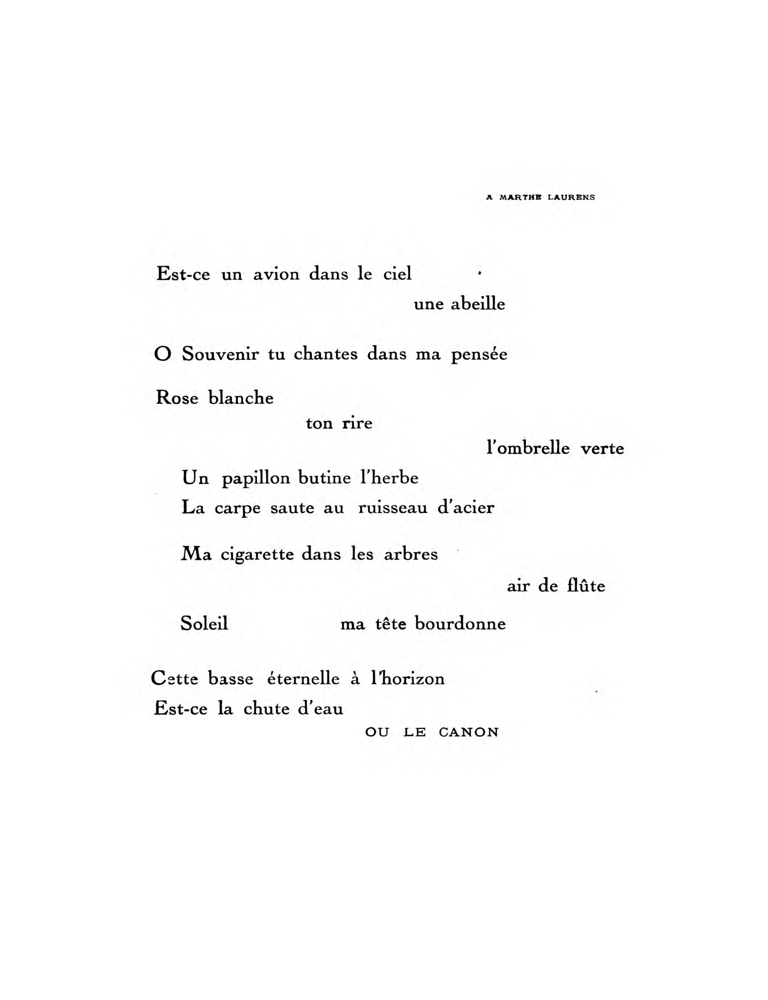
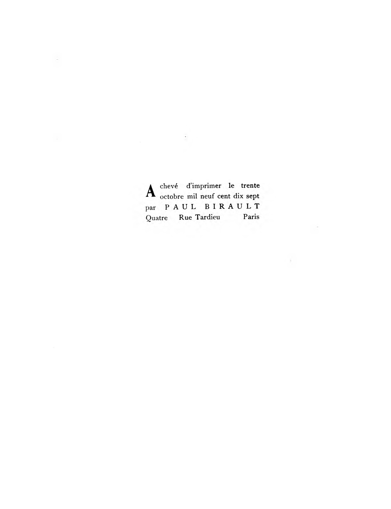

Spirales / Paul Dermée.
Dermée, Paul.
[France? : s.n.], 1917.
http://hdl.handle.net/2027/wu.89095288494
Public Domain in the United States,
Google-digitized
http://www.hathitrust.org/access_use#pd-us-google
This work is deemed to be in the public domain in the
United States of America. It may not be in the public
domain in other countries. Copies are provided as a
preservation service. Particularly outside of the United
States, persons receiving copies should make appropriate
efforts to determine the copyright status of the work
in their country and use the work accordingly. It is possible
that heirs or the estate of the authors of individual portions
of the work, such as illustrations, assert copyrights over
these portions. Depending on the nature of subsequent
use that is made, additional rights may need to be obtained
independently of anything we can address. The digital
images and OCR of this work were produced by Google,
Inc. (indicated by a watermark on each page in the
PageTurner). Google requests that the images and OCR
not be re-hosted, redistributed or used commercially.
The images are provided for educational, scholarly,
non-commercial purposes.
Generated for 1 (Indiana University) on 2014-02-19 20:15 GMT / http://hdl.handle.net/2027/wu.89095288494
Public Domain in the United States, Google-digitized / http://www.hathitrust.org/access_use#pd-us-google

hsft»
Generated for 1 (Indiana University) on 2014-02-19 20:15 GMT / http://hdl.handle.net/2027/wu.89095288494
Public Domain in the United States, Google-digitized / http://www.hathitrust.org/access_use#pd-us-google


OF
U.S. A.
Generated for 1 (Indiana University) on 2014-02-19 20:15 GMT / http://hdl.handle.net/2027/wu.89095288494
Public Domain in the United States, Google-digitized / http://www.hathitrust.org/access_use#pd-us-google

Generated for 1 (Indiana University) on 2014-02-19 20:15 GMT / http://hdl.handle.net/2027/wu.89095288494
Public Domain in the United States, Google-digitized / http://www.hathitrust.org/access_use#pd-us-google

OF
Genera! Library System
University of Wisconsin
728 State Street
Madison, Wl 537
U.S.A.
Madison
Generated for 1 (Indiana University) on 2014-02-19 20:15 GMT / http://hdl.handle.net/2027/wu.89095288494
Public Domain in the United States, Google-digitized / http://www.hathitrust.org/access_use#pd-us-google

Generated for 1 (Indiana University) on 2014-02-19 20:15 GMT / http://hdl.handle.net/2027/wu.89095288494
Public Domain in the United States, Google-digitized / http://www.hathitrust.org/access_use#pd-us-google

OP
< * B R A «•
Genera! Library System
University of Wisconsin -
728 State Street
Madison, Wl 537(
U.S.A.
Generated for 1 (Indiana University) on 2014-02-19 20:15 GMT / http://hdl.handle.net/2027/wu.89095288494
Public Domain in the United States, Google-digitized / http://www.hathitrust.org/access_use#pd-us-google

Generated for 1 (Indiana University) on 2014-02-19 20:15 GMT / http://hdl.handle.net/2027/wu.89095288494
Public Domain in the United States, Google-digitized / http://www.hathitrust.org/access_use#pd-us-google


Generated for 1 (Indiana University) on 2014-02-19 20:15 GMT / http://hdl.handle.net/2027/wu.89095288494
Public Domain in the United States, Google-digitized / http://www.hathitrust.org/access_use#pd-us-google

Generated for 1 (Indiana University) on 2014-02-19 20:15 GMT / http://hdl.handle.net/2027/wu.89095288494
Public Domain in the United States, Google-digitized / http://www.hathitrust.org/access_use#pd-us-google

Generated for 1 (Indiana University) on 2014-02-19 20:15 GMT / http://hdl.handle.net/2027/wu.89095288494
Public Domain in the United States, Google-digitized / http://www.hathitrust.org/access_use#pd-us-google

SPIRALES
PAUL DERMEE
MCMXVI I
Generated for 1 (Indiana University) on 2014-02-19 20:15 GMT / http://hdl.handle.net/2027/wu.89095288494
Public Domain in the United States, Google-digitized / http://www.hathitrust.org/access_use#pd-us-google

Generated for 1 (Indiana University) on 2014-02-19 20:15 GMT / http://hdl.handle.net/2027/wu.89095288494
Public Domain in the United States, Google-digitized / http://www.hathitrust.org/access_use#pd-us-google

lUvO^-M
Generated for 1 (Indiana University) on 2014-02-19 20:15 GMT / http://hdl.handle.net/2027/wu.89095288494
Public Domain in the United States, Google-digitized / http://www.hathitrust.org/access_use#pd-us-google

Generated for 1 (Indiana University) on 2014-02-19 20:15 GMT / http://hdl.handle.net/2027/wu.89095288494
Public Domain in the United States, Google-digitized / http://www.hathitrust.org/access_use#pd-us-google

2vr0
Spirales
Generated for 1 (Indiana University) on 2014-02-19 20:15 GMT / http://hdl.handle.net/2027/wu.89095288494
Public Domain in the United States, Google-digitized / http://www.hathitrust.org/access_use#pd-us-google

I
L a été tiré de cet ouvrage
IàV
exemplaires in-quarto raisin sur Japon
Impérial avec deux gravures originales de
Henri Laurens, numérotés de
plus un exemplaire d'auteur hors série
numéroté f\
XU exemplaires in-quarto raisin sur Hollande
Van Gelder avec deux gravures originales
de Henri Laurens, numérotés de ....
xUO exemplaires in-octavo Jésus sur Alfa vergé,
numérotés de | à 200
VI à XXV
Exemplaire portant le N°
Generated for 1 (Indiana University) on 2014-02-19 20:15 GMT / http://hdl.handle.net/2027/wu.89095288494
Public Domain in the United States, Google-digitized / http://www.hathitrust.org/access_use#pd-us-google

SPIRALES
PAUL DERMÉE
MCMXVII
Generated for 1 (Indiana University) on 2014-02-19 20:15 GMT / http://hdl.handle.net/2027/wu.89095288494
Public Domain in the United States, Google-digitized / http://www.hathitrust.org/access_use#pd-us-google

General Library System
University of Wisconsin - Madison
728 State Street
Madison, Wl 53706-1494
U.S.A.
Generated for 1 (Indiana University) on 2014-02-19 20:15 GMT / http://hdl.handle.net/2027/wu.89095288494
Public Domain in the United States, Google-digitized / http://www.hathitrust.org/access_use#pd-us-google

A PABLO PICASSO
N° 13
Années d'autrefois
statues dans cinq quartiers de Paris
Fleurons de ma couronne
les chiens vous compissent à l'envi
Tu portes dans tes mains l'avenir
Avec quelle candeur lyrique
Tu traînais tes bottes éculées sur le pavé ardent
où tremble
Sphéroïdal
l'élixir de dix siècles
Carrefour focal de l'univers
Generated for 1 (Indiana University) on 2014-02-19 20:15 GMT / http://hdl.handle.net/2027/wu.89095288494
Public Domain in the United States, Google-digitized / http://www.hathitrust.org/access_use#pd-us-google

Les servantes puant la graisse
les ouvriers sentant le fer
boivent au bar
Les poètes et les maquereaux
ratissent l'argent d'un chartiste
Echec et mat
Soir d'améthyste
M. Bordeaux allume sa lanterne au bord de l'eau
L'amant des phoques et des sirènes
rêvait à l'ombre du Panthéon
Ce dirigeable en baudruche
Cochon
roulant mollement dans le ciel
Avenir ... Avenir ...
qu'un aigle te crève
Flambe en une bouffée d'enfer
Le poète dédaigne les parachutes
Mais il me faut des cailloux plein les poches
des sacs remplis de sable pur
Sinon les astres m'aspireraient
rosée terrestre
Generated for 1 (Indiana University) on 2014-02-19 20:15 GMT / http://hdl.handle.net/2027/wu.89095288494
Public Domain in the United States, Google-digitized / http://www.hathitrust.org/access_use#pd-us-google

Tout le long le long du Missouri...
Flotte petit drapeau ..."
Chante de ta bouche meurtrie dans un duel féroce
rose qui fait penser à l'autre rose
que tu portes
Petite putain tu t'es battue pour ton mâle
ardeur invincible de la race
La gloire est une belle guerrière jamais lasse
Années d'autrefois...
Petits vieillards qui gravissiez la butte
Vous ne saviez pas qu'au sabbat du N° 13
bouillait un philtre de sorcière
Nous en écumons le bouillon
Un aéroplane lyrique
s'élève de la terrasse du Sacré-Coeur
Compissez mes statues cabots lubriques
Elles élèvent une étoile au-dessus de leur tête
et me montrent au plein de la nuit
des points d'atterrissage dans Paris
Generated for 1 (Indiana University) on 2014-02-19 20:15 GMT / http://hdl.handle.net/2027/wu.89095288494
Public Domain in the United States, Google-digitized / http://www.hathitrust.org/access_use#pd-us-google

Vœux ardents vous montez de toutes les fenêtres
Panthéon Institut grosses cloches
sonnent le glas des morts
J'adopte tous les enfants qui vagissent
Vagabonds Solitaires perdus dans Paris
cette lumière féconde les vierges
Mes commandes vibrantes sont des nerfs
Chiens qui compissez mes statues
Vous hurlez longuement à la lune
MON AVION BOUCLE LA BOUCLE
- ..j
Generated for 1 (Indiana University) on 2014-02-19 20:15 GMT / http://hdl.handle.net/2027/wu.89095288494
Public Domain in the United States, Google-digitized / http://www.hathitrust.org/access_use#pd-us-google

PHR "-ARINA Ml A
Nuit lasse gloire d'or
Je veille solitaire flamme
Dormez en paix après cette rude bataille
Sublimes vainqueurs alanguis
Chaque lanterne s'en va dans l'ombre cherchant ses morts
QUI VIVE !
Ce ciel d'étoiles étendu sur Paris...
Generated for 1 (Indiana University) on 2014-02-19 20:15 GMT / http://hdl.handle.net/2027/wu.89095288494
Public Domain in the United States, Google-digitized / http://www.hathitrust.org/access_use#pd-us-google


A. HBNRI LAURENS
C'est l'élan de l'escarpolette
.Mon cœur est demeuré sur le quai
O ce trou à la poitrine
où le sang glousse
Partir
fte soleil rôde comme une abeille
7 % heures
Mes souliers sont lavés de rosée
Quel baptême pour ce front
Orage lourd à l'horizon
une blancheur
Ma voisine a déplié son journal
Mon voisin crache
Il est des eaux teintes d'azur
Gouttelettes sur ton sein pur
Les rails nous mènent sur des gouffres
Raison lucide qui me conduit
Tu bailles au soleil et tu joues
Un tressaut
Est-ce la chute dans la nuit...
Generated for 1 (Indiana University) on 2014-02-19 20:15 GMT / http://hdl.handle.net/2027/wu.89095288494
Public Domain in the United States, Google-digitized / http://www.hathitrust.org/access_use#pd-us-google

Plus vite
Suis la piste d'acier
La fumée s'accroche aux buissons
ma main qui pend à la portière
Soldat qui chante
toi seul
a le cœur de chanter
.Maisons heureuses collines vertes
La source coule entre mes doigts
Si mes yeux pleurent ce sont les escarbilles
Une lampe
dans une chambre déserte
PARIS
Pas un sourire
Dans une nuit de zeppelins
Ma raison éclaire mon chemin
Generated for 1 (Indiana University) on 2014-02-19 20:15 GMT / http://hdl.handle.net/2027/wu.89095288494
Public Domain in the United States, Google-digitized / http://www.hathitrust.org/access_use#pd-us-google

AUTOBUS
Les autobus en feu traversent la nuit des ponts
TOUS ils s'élancent Zèbres
dans la même direction
Trempe ta plume dans l'encrier
Où tremble un reflet de lumière
Un frôlement un vol s'étend
Quelle aile douce a le souffle qui passe
Phalènes rôdeuses comme des lunes
Voici un astre qui vient en dansant
tout ébloui de sa jeunesse
Amours
O solitude
Et vous
Exaltations
Mon œil cligne à l'éclat des réverbères
1916 Un an de plus
Quand arrivera-t-il à la place aux bicoques vibrantes
Celui dont le cœur est une torche et la tête un manomètre
Generated for 1 (Indiana University) on 2014-02-19 20:15 GMT / http://hdl.handle.net/2027/wu.89095288494
Public Domain in the United States, Google-digitized / http://www.hathitrust.org/access_use#pd-us-google

Toujours passent les autobus
Pleins de gens que je ne connais plus
OLLE
J'ai brisé mes tables de jeu
Et les éclats jetés aux cieux
sont mes étoiles
Par les ruelles les plus sombres
Où pas une prostituée ne rôde
Où l'on marche sur des bêtes molles et chaudes
Je vais éclairant la place seule de mes pas
SUR MES TALONS LA NUIT SE REFERME
AVEC UN BRUIT DE PORTE
Generated for 1 (Indiana University) on 2014-02-19 20:15 GMT / http://hdl.handle.net/2027/wu.89095288494
Public Domain in the United States, Google-digitized / http://www.hathitrust.org/access_use#pd-us-google

A CUILLAUMB APOLLINAIRB
ASTRE
L'eau bouillonne au pied du Pont Neuf
Marchandes de fleurs ô bouquinistes
Bouges discrets de la rue de Seine
l'Orient est rouge et bistre
Un astre est tombé droit du ciel
Hennissements
Un vol tournoie
Margot a roulé sous la table
En ce limpide soir de printemps
plumes teintes de mon sang
tournoie l'œil ardent d'un cigare
Petites gens
vos cœurs éclatent comme des grenades
Vivre et mourir au soleil qui m'éclaire...
Chacun de vous n'a-t-il pas une étoile
sous les paupières
Avivez votre feu tremblant
Au quai des Saints-Pères
Deux poètes se querellèrent
Et les voyoux riaient riaient
Generated for 1 (Indiana University) on 2014-02-19 20:15 GMT / http://hdl.handle.net/2027/wu.89095288494
Public Domain in the United States, Google-digitized / http://www.hathitrust.org/access_use#pd-us-google

Une nébuleuse tournoie et siffle
Feu lustral Nudité première
Bourre ta pipe
chausse tes bottes
Apprends à ton cœur à battre en cadence
La haine pure vole devant toi
L'ombre se tord dans la poussière
O Victoire sur le passé FULGURANCE
Margot un astre t'a visitée
Viens aux champs te rouler dans l'herbe
L'ivraie agacera tes fesses
Amour
rosée brillante sur ton sein
grappe de ciel
ivresse sainte
Aspiration vers la lumière
O nuit à mes lèvres avides
Coupe écumante jusqu'au bord
Astres pétillez sur mes lèvres
LA LUNE TOURNE ET ROUE
Generated for 1 (Indiana University) on 2014-02-19 20:15 GMT / http://hdl.handle.net/2027/wu.89095288494
Public Domain in the United States, Google-digitized / http://www.hathitrust.org/access_use#pd-us-google

A MAX JACOB
NIETZSCHE
Je danse sur la corde raide
Quel est ce cri parti d'en bas
Quelque mourant se désespère
La cime onduleuse des bois
Il est minuit
Je vais nageant dans un ciel d'espérances
Mes deux mains fidèles volent à mes côtés
Mes jambes frémissent comme des violons
L'archet qui vibre tire une plainte déchirante
Danse
Sois plus léger que les nuages
Attache des étoiles vermeilles à tes talons
Et fais hennir dans les campagnes de la terre
Les vierges et les étalons
Les maisons éclateront comme des courges mûres
La lune en sa nudité neuve
Fera luire le corps des enfançons
Et des femmes aux courbes de fleuve
Generated for 1 (Indiana University) on 2014-02-19 20:15 GMT / http://hdl.handle.net/2027/wu.89095288494
Public Domain in the United States, Google-digitized / http://www.hathitrust.org/access_use#pd-us-google

Il y a un rocher près de l'étoile de l'aube
D'où je verrai les choses d'assez haut
Bientôt...
... Mais j'ai glissé sur un serpent
Plus lisse qu'une corde de chanvre
Les ailes les ailes de Satan...
Tombe
en
silence
comme une orange trop mûre
Astre mort
fou
Aéronaute
Illumine le ciel profond de ton feu pur
La mort chevauche tes épaules
Que regretter
Une torche brûle sur la montagne
Tu as dansé dans les nuages
Tombe
Idéal
Il y aura dans la campagne
De petites gens qui se nourriront de ton cadavre
Generated for 1 (Indiana University) on 2014-02-19 20:15 GMT / http://hdl.handle.net/2027/wu.89095288494
Public Domain in the United States, Google-digitized / http://www.hathitrust.org/access_use#pd-us-google

A EMILB DANTIKNE
Mes mains vibrent à l'eau qui passe
frileuse harpe
Les jours anciens guêpes dans ma mémoire
Chantent
Soleil
fleur qui naît sur la joue
Ma yole tourne dans les remous
Maisons jumelles dans l'eau qui glisse
passez
Une ombrelle me dit Espère...
Blessé qui te chauffes au soleil
Je m'en vais au fil de ma vie
mais tes plaies font souffrir ma chair
Des roses
Un cheval nu
Lumière
Tu me tends en riant la touffe de bruyères
O blonde
mes mains plongent dans l'avenir
CONQUÉRIR
Generated for 1 (Indiana University) on 2014-02-19 20:15 GMT / http://hdl.handle.net/2027/wu.89095288494
Public Domain in the United States, Google-digitized / http://www.hathitrust.org/access_use#pd-us-google

Les voûtes m'ont happé
Mort proche
et seul
Mes lèvres tremblent
Brusques ténèbres je suis lumière
N'ai-je pas embarqué un tonnelet d'amour
Bois à la ronde
et danse avec l'aviron
Et quel falot que la gloire sur les eaux sombres
Une lueur
Hardi les cœurs
Mes bras battent comme des bielles
Avenir...
Ohé la chanson des rameurs
La brune
en pleurs
dit sa
douleur
Je vais comme un poisson volant
qui passe d'une mer à l'autre
Vif aviron plonge et t'éplore ...
VOICI DES ÉTOILES NOUVELLES
Generated for 1 (Indiana University) on 2014-02-19 20:15 GMT / http://hdl.handle.net/2027/wu.89095288494
Public Domain in the United States, Google-digitized / http://www.hathitrust.org/access_use#pd-us-google

ROMANCE
Le pavé sonne sous la semelle
E'n route le joyeux troupier
Mon bâton ferré sème des étincelles
L'avenir s'ouvre comme une rose au cœur pommé
Les dernières maisons ô chant de l'alouette
Têtes jointes
en rire
en pleurs
Années d'autrefois
Vous errez à l'ombre épaisse des bois
Mon bâton ferré
volez étincelles
Des regards plus doux que la pimprenelle
ou le blond lilas
m'attendent là-bas
Tragiques années
O mes souvenirs O mon pur désir
Corolles par le sang tachées
Generated for 1 (Indiana University) on 2014-02-19 20:15 GMT / http://hdl.handle.net/2027/wu.89095288494
Public Domain in the United States, Google-digitized / http://www.hathitrust.org/access_use#pd-us-google

Trimardeur pose ton paquet
flatte ton chien
Est-ce la pluie
ou sa langue sur tes mains ...
Le ciel sinistre quel noir mélange
Tu laisses tomber ton bâton
Tu pleures
Un peu de liqueur espérance
tache le ciel à l'Orient
Bois à ta gourde grand flandrin
Prends ton bâton flatte ton chien
Vivent les routes et les filles de France
Je vois là-bas une lumière
Le pain dur craque sous mes dents
Je sens là-bas une chaleur...
Soleil
que Gloire pure comme l'olive
mon Regards ardents
orgueil Victoire
attend Rire
.Mon bâton sème des étoiles
Je chante au rythme de mes pas
L'AVENIR qui croissait sur le bord du chemin
s'épanouira dans ma main
Generated for 1 (Indiana University) on 2014-02-19 20:15 GMT / http://hdl.handle.net/2027/wu.89095288494
Public Domain in the United States, Google-digitized / http://www.hathitrust.org/access_use#pd-us-google

A. JUAN GRIS
NORD-SUD
De Montmartre à Montparnasse
cheval de Troie
pour la paix et la guerre
Tu vas et viens
NORD-SUD
Coursier sonnaillant de lumières
Voûte de chapelle
grotte humide
Usine où l'huile coule sur les pièces d'acier
Chambre des morts aux flammes de cierges
GARES
refuges contre la beauté du ciel
CEuvres d'art
Vos quais frémissent comme des embarcadères
Traversée
Generated for 1 (Indiana University) on 2014-02-19 20:15 GMT / http://hdl.handle.net/2027/wu.89095288494
Public Domain in the United States, Google-digitized / http://www.hathitrust.org/access_use#pd-us-google

La demoiselle qui perce les tickets
jamais n'est remontée au jour
Comme les chevaux de mine aux robes couleur de bière
à mille pieds sous terre elle fait l'amour
Nostalgique des Etoiles elle y mourra un jour
Rapides nous passons
Nous émergeons dans la lumière
VAVIN ... R
Cette station devrait s'appeler Q j
Nombril du Monde t 0 n
Par un trou de sape nous nous acheminons
Paris là-haut nous ignore
Epanouissement d'une rose
Aurore
Les belles filles au rire humide ...
Comme les nihilistes
c'est sous le regard de grands yeux peints
que nous édifions un monde
l'Avenir
Luttes ardentes
Jeunes lions dans la caverne
.Morsures de haine ou d'amour on ne sait
Flamme ronflante des lampes à souder
Jeunesse et force puissamment se marient
Vie
Generated for 1 (Indiana University) on 2014-02-19 20:15 GMT / http://hdl.handle.net/2027/wu.89095288494
Public Domain in the United States, Google-digitized / http://www.hathitrust.org/access_use#pd-us-google

Pôle Nord
Pôle Sud
Montmartre où laboure un géant
où de bons ouvriers travaillent
Montparnasse qui tressaille
locomotive lancée en un galop furieux
Un peu de braise incandescente
Gare à vos yeux
Suprême badaud dilettante
Seins jumeaux
Pôles de Paris
L'ARC VOLTAIQUE JAILLIT
DANS LA NUIT
Generated for 1 (Indiana University) on 2014-02-19 20:15 GMT / http://hdl.handle.net/2027/wu.89095288494
Public Domain in the United States, Google-digitized / http://www.hathitrust.org/access_use#pd-us-google


A MARTHE LAURBKS
Kst-ce un avion dans le ciel
une abeille
O Souvenir tu chantes dans ma pensée
Rose blanche
ton rire
l'ombrelle verte
Un papillon butine l'herbe
La carpe saute au ruisseau d'acier
Ma cigarette dans les arbres
air de flûte
Soleil ma tête bourdonne
Cette basse éternelle à l'horizon
Est-ce la chute d'eau
OU LE CANON
Generated for 1 (Indiana University) on 2014-02-19 20:15 GMT / http://hdl.handle.net/2027/wu.89095288494
Public Domain in the United States, Google-digitized / http://www.hathitrust.org/access_use#pd-us-google

SPIRALES
Spirales qui percez l'inconnu de mon ciel
Ondoiements
Coupes dans l'air tiède
Verres
Une jeune lumière tremble sur ma tête
O mare bleue dans l'œil des biches
Des rides vous plissent
Roseaux serpents frénétiques
Premières branches fraîches encore
Soies qui se froissent
Je m'élève
Un coup de talon bon nageur
NAISSANCE MAGNIFIQUE LA
LUMIÈRE
Plumes au vent
oscille hésite
Monter virer ou redescendre
Mes poches sont pleines de cailloux
Je nargue la bonne chance
Generated for 1 (Indiana University) on 2014-02-19 20:15 GMT / http://hdl.handle.net/2027/wu.89095288494
Public Domain in the United States, Google-digitized / http://www.hathitrust.org/access_use#pd-us-google

Les routes du ciel montent devant moi
Irai-je seul...
En route précieux amis
A l'horizon fument les toits
.Mettez vos gros souliers à clous
Fumer fumer sa pipe sur le bord du chemin
Faire naître un soleil rouge dans sa main en
C'est ainsi que Dieu passe son temps route
lui pour qui tout manque d'imprévu...
lui qui manque d'espérance ...
Du courage ô toi que j'aimais
Ton astre tremble au bout de l'avenue
Couvre ton cœur du pur acier
LUTTE
Volutes
Vous frémissez au vent comme un drapeau
Chant de Victoire montez montez montez
La route tremble sous mes sabots
Mon poing brandit l'ardente torche
Sublime spirale d'acier
LE CIEL POUDROIE D'ÉTOILES MORTES
Generated for 1 (Indiana University) on 2014-02-19 20:15 GMT / http://hdl.handle.net/2027/wu.89095288494
Public Domain in the United States, Google-digitized / http://www.hathitrust.org/access_use#pd-us-google

A ALFHEDO CÂSELLA
Cette foule qui croit souffler la tempête
Du vent dans les oreilles
Bt mes cheveux désespérés comme des vipères
Danse
ballotte
Vide ton cœur par dessus le bordage
Le pur éclair est tombé sur le mât
Je me glisse par les manches à air
Et remue d'étranges choses dans la cale
Bible fripée
Chat à neuf queues
Habit brodé
La blanche écume déferle dans ton âme
O pavillons des phonographes
Le vent vous étouffe d'un poing dans la gorge
Mais au cœur de la première nuit d'étoiles
Votre voix éraillée insultera encore la beauté et la force
Impossible de vous tuer
Generated for 1 (Indiana University) on 2014-02-19 20:15 GMT / http://hdl.handle.net/2027/wu.89095288494
Public Domain in the United States, Google-digitized / http://www.hathitrust.org/access_use#pd-us-google

Louvoyer
Non
VENT DEBOUT
Crachez-moi l'embrun à la face
Le ciel se fend Quelle Grimace
Faim des requins
haine des astres
Je vais
la poitrine labourée des vents
les yeux en pleurs dans la bourrasque
Brille lanterne à l'étambot
Inflexible l'aiguille demeure
Je sais où je veux aborder
Je te vois Ile des Poètes
Les cadavres s'y changent en fleurs
J'avance nu CONTRE LA TEMPÊTE
Generated for 1 (Indiana University) on 2014-02-19 20:15 GMT / http://hdl.handle.net/2027/wu.89095288494
Public Domain in the United States, Google-digitized / http://www.hathitrust.org/access_use#pd-us-google

A FÉLIX
Je te poursuis biche lyrique
Les feuilles volent sous tes sabots
Entre les chênes une brume grise
Encens pour tes divins naseaux
Vois les colchiques de l'automne
Ces lys
La rosée au creux de mes mains
La bruyère rose
l'anémone
Et cette touffe de jasmin
Tu fuis
Vois mes lèvres humides
M.on amour
ma colère divine
Vois mon orgueil flamme rigide
Ma barbe humide du matin
Tes yeux sont des lacs purs rêvant sur la colline
Generated for 1 (Indiana University) on 2014-02-19 20:15 GMT / http://hdl.handle.net/2027/wu.89095288494
Public Domain in the United States, Google-digitized / http://www.hathitrust.org/access_use#pd-us-google

Mais tu me fuis
Ah sale bête
Folle course à travers les bois
les halliers les chênaies et la froide rivière
Une clairière
Subit émoi
A ce bout de chemin
est-ce un feu de charbonnier
ou une auto
Ton œil si bleu
miroir du monde
frissonne
Tu t'arrêtes ...
Hallali l'ivresse me gonfle TRI
Biche lyrique O M P H E
mes bras en guirlande à ton cou
Je sens couler tes larmes sur ma joue
Generated for 1 (Indiana University) on 2014-02-19 20:15 GMT / http://hdl.handle.net/2027/wu.89095288494
Public Domain in the United States, Google-digitized / http://www.hathitrust.org/access_use#pd-us-google

BOUTEFEU
Sur quelque coléoptère
Au corselet d'acier bleuté
Le passé ne me pèse guère
En route l'auto enragée
Lourde caravane pachyderme
Chameaux aux poils de maïs
Naja vermeil au cœur de chêne
Triporteur peint en gris-souris
Un Gourka porte mon diadème
Une clairière
Amis campons
Campéamor Lautréamont
Ont de bien falottes cervelles
La fumée monte dans le ciel
FOLIE
Vos élus ont la bouche en rond
Generated for 1 (Indiana University) on 2014-02-19 20:15 GMT / http://hdl.handle.net/2027/wu.89095288494
Public Domain in the United States, Google-digitized / http://www.hathitrust.org/access_use#pd-us-google

Les serpents dansent sur l'herbe sèche
Chevilles anneaux dents osselets
J'ai soif de la rosée lyrique...
L'aube verra mon cœur navré
maudire les fleuves nostalgiques
J'adore un dieu aux doigts d'acier
Mes amis un à un emplissent la clairière
Fûts de sapins rouges au soleil
De vos épaules rondes
Vous me cachez tout le vieux monde
Ohé
L'amitié des poètes ronge comme une eau forte
DÉCAPÉ
Caravane clos ta paupière
Cortège des splendeurs légendaires
Les dents l'une à l'autre s'accrochent
JE BRANDIS UNE ARDENTE TORCHE
Generated for 1 (Indiana University) on 2014-02-19 20:15 GMT / http://hdl.handle.net/2027/wu.89095288494
Public Domain in the United States, Google-digitized / http://www.hathitrust.org/access_use#pd-us-google

A EMILE MOUZON
TOMBE
Une aube blanche s'est épandue
Pinson qui chante
Ame qui tremble
C'est ici qu'il fut enterré
Celui que nous avons aimé
Si blanche
et l'astre vient
Souvenir douloureux qui rougeoie
Vole la flèche sur les sapins
L'araignée file sa toile
Des yeux humides
gouttes tremblantes
Un lys des bois s'ouvre en rêvant
Generated for 1 (Indiana University) on 2014-02-19 20:15 GMT / http://hdl.handle.net/2027/wu.89095288494
Public Domain in the United States, Google-digitized / http://www.hathitrust.org/access_use#pd-us-google

Celui qui vint semant le soufre
Lançant au ciel ses graines ailées
se fit lumière dans la forêt
Au clair de lune danse et rôde
Rêve étendu dans la clairière
Vibrant midi
Silence d'église
Tes lèvres sont pures comme le laurier
Tes yeux stellaires éblouies
Moucherons dansez
souples pensées
Une épée rouillée...
C'EST TON SANG
Vole Flamme qui fut la vie
Cette plaie qui rayonne à mon flanc
Generated for 1 (Indiana University) on 2014-02-19 20:15 GMT / http://hdl.handle.net/2027/wu.89095288494
Public Domain in the United States, Google-digitized / http://www.hathitrust.org/access_use#pd-us-google

L ETANG LA VILLE
Les allumettes ne prennent pas
Si la poudre était détrempée
Un jour froid
désespéré
Point mort de l'année
Des ailes lourdes
Un rossignol
une source
Le tabac est trop humide
La pipe ne tire pas
Bois donc un coup de vin Bibi
Mets du soleil dans tes entrailles
Au loin
Le train siffle et passe sur des tôles
L'étincelle butine la paille
Generated for 1 (Indiana University) on 2014-02-19 20:15 GMT / http://hdl.handle.net/2027/wu.89095288494
Public Domain in the United States, Google-digitized / http://www.hathitrust.org/access_use#pd-us-google

Un lambeau de soleil traîne sur l'herbe
VIF ÉCLAT
c'est un papillon blanc qui passe
Je fais s'essaimer les abeilles L,
O sublime lampe qui m'éclaires
La ronde dans la clairière I
È
Orgueil d'être vainqueur
Regards d'azur E
UN HOMME VIENT AVEC
UNE ÉTOILE DANS LE CŒUR
Generated for 1 (Indiana University) on 2014-02-19 20:15 GMT / http://hdl.handle.net/2027/wu.89095288494
Public Domain in the United States, Google-digitized / http://www.hathitrust.org/access_use#pd-us-google

A MADAME CRBTA PROZOR
Les rails luisent
Que le vent est froid
Mets ton chandail
Tes yeux en pleurs...
Non
C'est le vent d'automne
Un nuage noir
La peur
Les feuilles jaunes tourbillonnent
Quelque chose est déjà mort
Mains inquiètes
J'ouvre et je ferme la valise
Les coquelicots sont lourds de pluie
Le toit de la gare
comme la bonne réjouie
Une ardeur me brûle les joues
La destinée vient en mugissant sur les rails
Pigeons Espoirs aux ailes lourdes
Quittez O vous le quai où mon ardeur trépigne
Le train écrase sous ses roues
Le cceur
les yeux
des jeunes filles
Generated for 1 (Indiana University) on 2014-02-19 20:15 GMT / http://hdl.handle.net/2027/wu.89095288494
Public Domain in the United States, Google-digitized / http://www.hathitrust.org/access_use#pd-us-google

Alors adieu B
branlants aïeux O
Ecris-nous de ton long voyage
Je serre des mains livides q
Vieux cadavres *
A
Je baise des joues G
Tes yeux en pleurs „
Au nord un arc en ciel s'irise
Des promesses vibrent
C'en est fait
La corde est BRISÉE
Petite fumée mouchoir qu'on agite là-bas
Cloche argentée d'une rainette
Chantez sans fin dans une âme déserte
J'AI OUBLIÉ QUELQUE
CHOSE SUR LE QUAI
Generated for 1 (Indiana University) on 2014-02-19 20:15 GMT / http://hdl.handle.net/2027/wu.89095288494
Public Domain in the United States, Google-digitized / http://www.hathitrust.org/access_use#pd-us-google

A MART1NI-ZAMAI
Eau de moire Soleil en gouttelettes
En cet ardent matin d'été
Baigne-toi forme sacrée
Jasmin humide
gloire de jeunesse
Tes dents claires
rosée tremblante sur ton sein dur
Un nuage flotte en écharpe
Chair lumineuse l'ombre s'efface
Je frisonne ô tendre azur
Generated for 1 (Indiana University) on 2014-02-19 20:15 GMT / http://hdl.handle.net/2027/wu.89095288494
Public Domain in the United States, Google-digitized / http://www.hathitrust.org/access_use#pd-us-google

Ktirement deux larmes perlent
Tu bailles de désir et d'ennui
Une guêpe rôde
heure de miel
L'eau sautelle sur les cailloux
un merle
Le bouleau pousse son jet de feuilles
qui retombe en pluie de lumière
Mes deux mains jointes à tes genoux
Mais l'essaim blond qui tourbillonne dans la clairière
Generated for 1 (Indiana University) on 2014-02-19 20:15 GMT / http://hdl.handle.net/2027/wu.89095288494
Public Domain in the United States, Google-digitized / http://www.hathitrust.org/access_use#pd-us-google

12
OCTOBRE
Un serpent froid gourmette d'acier
S'est pendu à ton bras qui tremble
Secoue tes branches ô peuplier
Les feuilles partent et les oiseaux
Squelette ...
Ton rire se fige
lèvres inquiètes
Une mantille à tes épaules
une lettre
Est-ce un galop dans le fourré
Ton cœur bat-il à coups pressés
mes mains sont moites
Pâle regard du haut du ciel
Vois mon sein tendre
mes tulipes froissées
J'ai rempli ma bouche de miel
Eperons d'or cheval ferré
Au vent d'automne la feuille tremble
SIFFLE siffle serpent d'acier
Generated for 1 (Indiana University) on 2014-02-19 20:15 GMT / http://hdl.handle.net/2027/wu.89095288494
Public Domain in the United States, Google-digitized / http://www.hathitrust.org/access_use#pd-us-google

J'ai la haine du métal
et je l'admire
Fidèle émissaire du canon
Tu portes la mort dans l'air qui vibre
Tu rends froids et raides comme des poutres
ceux que tu couches sous ton baiser immonde
vipère ailée au vol ardent
Je grelotte la pluie tombe
O Mère des Sept Douleurs
Voici mon cœur
Tout ruisselant de la pitié du monde
Un arbre meurt dans la forêt... La Délivrance
Surgissez donc
en ce crépuscule pluvieux
ORGUEIL AMOUR
Flammes inapaisées
Une tour monte dans notre vie
OHÉ
L'étoile en pleurs scintille
Voici
l'oubli
des jours
transis
Un clair feu dans la cheminée
LES SERPENTS BATTENT A LA VITRE
Generated for 1 (Indiana University) on 2014-02-19 20:15 GMT / http://hdl.handle.net/2027/wu.89095288494
Public Domain in the United States, Google-digitized / http://www.hathitrust.org/access_use#pd-us-google

GUETTEUR
Guetteur de ce matin pluvieux
La fièvre trouble tes mains froides
Chante ou rêve en fermant les yeux
Des corbeaux gris pleurent et croassent
Amour
T'en souviens-tu de la chambre éclairée
Linge froissé
l'ombre chaude de l'alcôve
Soleil vibrant à claire voie
Et la flamme exaltatrice
miroir ardent
Foyer
Amant
ANNÉES II
Deux enfants nus la nuit sur l'asphalte mouillée
Generated for 1 (Indiana University) on 2014-02-19 20:15 GMT / http://hdl.handle.net/2027/wu.89095288494
Public Domain in the United States, Google-digitized / http://www.hathitrust.org/access_use#pd-us-google

Pourquoi t'en viens-tu mon jeune désir
Pourquoi t'en vas-tu ma peine infinie
Les yeux fermés chantons la tremblante espérance
L'herbe pleureuse
les flaques pleines de vif argent
Mes souliers boueux
la vitre embuée
et mes regrets ardents
Guetteur aux yeux scellés
le soleil rôde sur la fougère
Ton clair sourire
Viens nous allons nager dans la verte lumière
GUETTEUR DE CE MATIN PLUVIEUX
Generated for 1 (Indiana University) on 2014-02-19 20:15 GMT / http://hdl.handle.net/2027/wu.89095288494
Public Domain in the United States, Google-digitized / http://www.hathitrust.org/access_use#pd-us-google


EN CINQUIEME LIGNE
Sèche tes pleurs la laine file
L'orage gronde sur la colline
Gai Gai
Les demoiselles de Bois-Doré
Après avoir beaucoup pleuré
Se sont toutes remariées
Dors l'alouette s'est blottie
Les feuilles sont luisantes comme l'acier
En écho à mon large rire
Ciel...
Le canon tonne dans les halliers
La maison tremble
Au craquement de tes vertèbres
M.es prunelles se sont épanouies
Un oiseau tombe inanimé
Fuyez avec le vent feuilles qui pantelez
La mort arrive conduisant son auto rouge
Generated for 1 (Indiana University) on 2014-02-19 20:15 GMT / http://hdl.handle.net/2027/wu.89095288494
Public Domain in the United States, Google-digitized / http://www.hathitrust.org/access_use#pd-us-google

Au bord des sources
les étoiles se sont ternies
La destinée aux doigts ogives
nous saisira là où nous sommes
Tes cils offusquent tes yeux d'acier
Attente moite
Cachés au fond d'un trou d'obus
Orbite lunaire jonchée de plumes
La mort frappe
Cocorico Eveille-toi
SUR
Ma pipe emplit le ciel d'un clair azur
Les arbres s'étirent au soleil
et font des trilles NOS
avec les gouttes pures
restées aux feuilles entr'ouvertes
Le gazon est jonché d'éclats de rire
TÊTES
MAIS TOI POURQUOI AS-TU
CE REGARD SI CRUEL
Generated for 1 (Indiana University) on 2014-02-19 20:15 GMT / http://hdl.handle.net/2027/wu.89095288494
Public Domain in the United States, Google-digitized / http://www.hathitrust.org/access_use#pd-us-google

L'ANNEAU
Je me love autour de ton cœur
comme l'anneau de Saturne
Lame fine brillant la nuit
Couperet d'acier sur fond de lune
L'Avenir tremble au fond du puits
Bête royale sortant de l'arche
Tes reins frémissent brusquement
Sur quelque terre barbare
Les serpents soyeux glissent dans l'herbe tiède
Des battements
O n'entrez pas
Cet arbre brûle comme une chevelure
Mes yeux sont chauds
Gouttes de sang
L'averse s'écrase aux fenêtres
Generated for 1 (Indiana University) on 2014-02-19 20:15 GMT / http://hdl.handle.net/2027/wu.89095288494
Public Domain in the United States, Google-digitized / http://www.hathitrust.org/access_use#pd-us-google

Etire-toi voluptueusement
Bête
Cercle ton corps comme un scorpion
Sors tes ongles
Plonge ta tête en arrière
Au ruisseau flottent les roseaux
Le drapeau claque un jour de fête
J'ai les doigts d'un pianiste
Des étincelles
Des yeux mi-clos
Dans la vaste nuit bleue et bistre
La voie lactée flotte au fil de l'eau
Je me love autour de ton corps
Ma haine siffle comme l'acier
O TOI
Plutôt qu'un collier d'or
Voici mes doigts tendrement noués
L'ANNEAU DE SATURNE
Generated for 1 (Indiana University) on 2014-02-19 20:15 GMT / http://hdl.handle.net/2027/wu.89095288494
Public Domain in the United States, Google-digitized / http://www.hathitrust.org/access_use#pd-us-google

A HENRI MAT1SS»
Cette aile pure dans les rues de Paris
Tramways blanches bastides
Métros ombreux sous-bois constellés de lumières
Haleine âcre de la fougère
Je presse le « Matin » comme un billet d'amour
Des ruisseaux courent dans les rails
si loin si loin
Une abeille au Pont Saint-Michel
Voye% mes larmes
Aux Tuileries on fait les foins
Couleuvres de vos regards poudre de riz
ô demoiselles
Generated for 1 (Indiana University) on 2014-02-19 20:15 GMT / http://hdl.handle.net/2027/wu.89095288494
Public Domain in the United States, Google-digitized / http://www.hathitrust.org/access_use#pd-us-google

Danser sur une corde au milieu de la Seine
bonnet pointu
des grelots aux chevilles
mes deux yeux ardents cerclés d'or...
Frissonne dans ta souquenille
trille d'azur métal en feu
mandore
Les avenues sont pleines de tombeaux
si loin si loin
Des ex-votos à toutes les fenêtres
Et ces fleurs sous mes pieds sourdes à mes prières
Flamme des cierges
libellule qui passe
L'AMOUR
TOURBILLONNE COMME UN ASTRE
Generated for 1 (Indiana University) on 2014-02-19 20:15 GMT / http://hdl.handle.net/2027/wu.89095288494
Public Domain in the United States, Google-digitized / http://www.hathitrust.org/access_use#pd-us-google

A PIERRE REVERDY
Saute à la corde
Fillette aux jupes courtes
Tu ne veux pas écraser le serpent
Tu joues
Désir qui tourne
danger sifflant
tremblante étoile
Toujours plus vite
L'Avenir frémit comme l'air au-dessus du poêle
Tu VIS
Auréole de jeunesse
Amour O gloire frémissante
O cuirasse d'inconnu
"
Generated for 1 (Indiana University) on 2014-02-19 20:15 GMT / http://hdl.handle.net/2027/wu.89095288494
Public Domain in the United States, Google-digitized / http://www.hathitrust.org/access_use#pd-us-google

Quand tu danseras à la Galette
Tes hauts talons battant tes jupes
Tu seras la corde qui tournera
toujours plus vite
Autour de l'homme qui te tiendra
Elle avait
deux enfants
de son pre-
mier amant
Saute et chante
la vie est toute dans les chansons
Tes jeunes seins vivent sur ta poitrine
Cette balle rouge qui veut danser
Des voyoux la bourrent de coups de pieds
C'est mon cœur
Generated for 1 (Indiana University) on 2014-02-19 20:15 GMT / http://hdl.handle.net/2027/wu.89095288494
Public Domain in the United States, Google-digitized / http://www.hathitrust.org/access_use#pd-us-google

O toi qui sautes
réchauffe-le entre tes mains
Souffle ton haleine sur l'oiseau tombé du toit
C'est ta mission
fille à la corde
Ce souffle froid qui vient du corridor...
Serpent qui passe sous tes bottines
Villes campagnes
fleuves gonflés de pluie
Saute et danse
la terre tourne sous tes pieds
Tu plânes au milieu des étoiles
JEUNESSE MÉTÉORE DES NUITS D'ÉTÉ
Generated for 1 (Indiana University) on 2014-02-19 20:15 GMT / http://hdl.handle.net/2027/wu.89095288494
Public Domain in the United States, Google-digitized / http://www.hathitrust.org/access_use#pd-us-google

A CARLOS-LOZANO
SISLEY
Les tramways chantent sur leurs rails
Matinée aux rives du fleuve
Ta pipe tes souliers à clous ton chandail
Promène ta candeur
Le ciel d'été vibre comme une cloche
Jeunes années qui passez tendrement
Le miel coule par toutes mes blessures
Tes reproches
Bouleau d'argent
Chaînette à mes poignets
l'azur
VA MODÈLE LE MONDE
AU GRÉ DE TES DÉSIRS
Generated for 1 (Indiana University) on 2014-02-19 20:15 GMT / http://hdl.handle.net/2027/wu.89095288494
Public Domain in the United States, Google-digitized / http://www.hathitrust.org/access_use#pd-us-google

DOULEUR
Generated for 1 (Indiana University) on 2014-02-19 20:15 GMT / http://hdl.handle.net/2027/wu.89095288494
Public Domain in the United States, Google-digitized / http://www.hathitrust.org/access_use#pd-us-google

ET L'ORIENT
DES TENDRESSES HUMAINES
DEMAIN...
Et le laurier plus âcre que la mer
Un éclair pur ondule dans ta chair
Regards d'orgueil Victoire
MAIS LA MARGE LL.E DE TES LÈVRES USEES
Generated for 1 (Indiana University) on 2014-02-19 20:15 GMT / http://hdl.handle.net/2027/wu.89095288494
Public Domain in the United States, Google-digitized / http://www.hathitrust.org/access_use#pd-us-google

FLAMMES
Cette plaie qui saigne à mon flanc ...
La flamme ronge une basilique
Que de prières au vol ardent
Se tordent
ô torche héroïque
Spirales qui monteç au ciel
L'orgue fait vibrer ma chair
Une voix crie
Ah c'est mon flanc qui saigne
Etoile pure qui brilles
Je couve ta tremblante enfance
Fièvre
Frissonne dans la nuit ardente
Sueur divine du dernier soir
Generated for 1 (Indiana University) on 2014-02-19 20:15 GMT / http://hdl.handle.net/2027/wu.89095288494
Public Domain in the United States, Google-digitized / http://www.hathitrust.org/access_use#pd-us-google

Je me cramponne de mes mains tâtonnantes
Si seul
Feu de tourbe à mon côté
Flamme purifiante
Douleur
Ces feuilles mortes sur mon front...
Mes cris ont effrayé les oiseaux qui dormaient
Le cœur des hommes est froid comme la terre
Lune polie
tu montes en dansant dans le ciel
M.a tête danse mes yeux me quittent
s'envolent
Je me sens soulevé comme une plume folle
Je suis guéri
C'EST LE DÉLIRE
Cette plaie qui saigne à mon flanc...
Generated for 1 (Indiana University) on 2014-02-19 20:15 GMT / http://hdl.handle.net/2027/wu.89095288494
Public Domain in the United States, Google-digitized / http://www.hathitrust.org/access_use#pd-us-google

A VINCENT HU1DOBRO
Tu te bandes comme un arc
LA BÊTE qu'il faudrait tuer
pince joyeusement la harpe
Chantez nerfs gorge criez
Dans une eau chaude et verdâtre
lentement glisse
Un geste un soupir une plainte
vont irriter ses dents sauvages
L'oreille ouverte
rien ne bouge
Un cri
voilà qu'un vent tranchant
fait tomber les brandons pourpres
vole la flamme allume la joue
Une table pour s'accouder
le froid
la montre ciseaux à broder
la couverture sur ses épaules tièdes
Generated for 1 (Indiana University) on 2014-02-19 20:15 GMT / http://hdl.handle.net/2027/wu.89095288494
Public Domain in the United States, Google-digitized / http://www.hathitrust.org/access_use#pd-us-google

Est-ce un monde en formation
qui tourne en sifflant tout au fond de mon être
Il brûle
S'il allait apparaître
Rosaire sanglant à la fenêtre
soleil couchant sur les marais
LA BÊTE MORD
Voussure
Contracte le silence
Ferme les yeux pour passer le gué
V
A Je la piétine avec une ineffable rage *
T
h Chant de triomphe O
I
! sur mon ennemi vaincu R
c
L'HOLOCAUSTE MONTE EN SPIRALES
Generated for 1 (Indiana University) on 2014-02-19 20:15 GMT / http://hdl.handle.net/2027/wu.89095288494
Public Domain in the United States, Google-digitized / http://www.hathitrust.org/access_use#pd-us-google

A BLAISE CBNDRARS
Etendu sur le dos dans la jeune bruyère
Le ciel tourne
Un bourdon sonne du clairon
Est-ce un oiseau qui passe
une balle
Vierge lumière
L'air vibre et danse dans ma tête
Toujours toujours cette tempête
qui déferle à l'horizon
Les trains passent sans arrêt
Mourir !
Fumée au ciel
et dans l'air des chansons
Grattez le sol Ongles fiévreux
JVl'endormir jusqu'à la nuit
La libellule aux ailes bleues
frissonne
Generated for 1 (Indiana University) on 2014-02-19 20:15 GMT / http://hdl.handle.net/2027/wu.89095288494
Public Domain in the United States, Google-digitized / http://www.hathitrust.org/access_use#pd-us-google

Un nuage de pluie pour ma peine infinie
Ou le vin blanc gommé des jours de canicule
eau de vie !
Le ciel d'acier tourne comme une coupole
Et frémit du canon qui tonne
Je grelotte sous l'ardent soleil
Coquelicots
Fleurs qu'on porte sous la peau
Chaude caresse
La chemise colle à mon côté
Rouge épanouissement
Un monde
toupie hollandaise
Astre
naît de mon flanc
MA TÊTE S'ÉCLAIRE
COMME UNE AMPOULE INCANDESCENTE
Generated for 1 (Indiana University) on 2014-02-19 20:15 GMT / http://hdl.handle.net/2027/wu.89095288494
Public Domain in the United States, Google-digitized / http://www.hathitrust.org/access_use#pd-us-google

MÉLUSINE
Circée
tes fleurs closes sont des gouttes de sang
Ma sève pour tes philtres magiques
O toujours payer de sa vie
Le destin
la lumière
et l'accomplissement
Herbe aux sorcières
macère
Je boirai d'un trait le breuvage
Renaître ... Mélusine
Ta chair de nacre
sort des écailles du serpent
Le soleil perce le brouillard
Tu luis comme un couteau neuf
Tu ris
Enfance
Abeille blonde
Et tu chantes
Generated for 1 (Indiana University) on 2014-02-19 20:15 GMT / http://hdl.handle.net/2027/wu.89095288494
Public Domain in the United States, Google-digitized / http://www.hathitrust.org/access_use#pd-us-google

Le suc frais de l'angélique
est sur tes lèvres
Monte et danse dans la prairie
Chanson nouvelle
Rosée vermeille
Rameau en fleurs
feuillage tremblant des ciguës
Un arbre a lâché sa dryade
qui fuit
O la poursuivre
sylvain tremblant sur mes jambes lascives...
Non!
Je me couche au bord du ruisseau
Quelle chanson
Quels éclats de rire
Circée de Paris
tu lèves ta houlette
Tous ces yeux bleus perdus dans l'herbe
O cette ombre qui m'envahit
Le ciel nu poudroie sur ma tête
Vais-je mourir
Cette plante de sang...
JETTE AU RUISSEAU
CE PHILTRE DE SORCIÈRE
Generated for 1 (Indiana University) on 2014-02-19 20:15 GMT / http://hdl.handle.net/2027/wu.89095288494
Public Domain in the United States, Google-digitized / http://www.hathitrust.org/access_use#pd-us-google

SANS DÉDICACE
Tes yeux loyaux
Gouttes fraîches tremblantes sur ton front
flacon des îles
eau parfumée
Reflet d'un feu si pur
Je me baigne dans le ruisseau
Ta main prompte à tuer la bêtise
s'offre
— Viens-là toi mon plus cher ami —
Ouverte comme un sexe
Avide de tendresse comme des lèvres
Je me plonge dans ton affection
Generated for 1 (Indiana University) on 2014-02-19 20:15 GMT / http://hdl.handle.net/2027/wu.89095288494
Public Domain in the United States, Google-digitized / http://www.hathitrust.org/access_use#pd-us-google

Du soleil sur le gazon
Ton rire
chant d'une âme heureuse
Ta belle joie à t'empiffirer
A nourrir une panse lumineuse
Tiens tu me plais bon compagnon
Je veux choquer ma coupe d'orgueil à la tienne
Les verres se mêlent
j'ai vidé le sien
Horreur !
LE FOND DE SON AME
SIFFLE DE VIPÈRES
Generated for 1 (Indiana University) on 2014-02-19 20:15 GMT / http://hdl.handle.net/2027/wu.89095288494
Public Domain in the United States, Google-digitized / http://www.hathitrust.org/access_use#pd-us-google

GUERRE
Generated for 1 (Indiana University) on 2014-02-19 20:15 GMT / http://hdl.handle.net/2027/wu.89095288494
Public Domain in the United States, Google-digitized / http://www.hathitrust.org/access_use#pd-us-google

A GEORGES BRAQUE
Generated for 1 (Indiana University) on 2014-02-19 20:15 GMT / http://hdl.handle.net/2027/wu.89095288494
Public Domain in the United States, Google-digitized / http://www.hathitrust.org/access_use#pd-us-google

FESTIN
Ils ont tant canonné le Ciel que le voilà criblé de trous
Il ne tardera pas à tomber
A tâtons dans les ténèbres
On se chasse une lame aux dents
Des fous reniflent l'haleine chaude
Où me cacher dans quelle chapelle
Chaque rencontre veut un mourant
Les bouchons sautent comme des cervelles
Et l'orgie est soûle de sang
Baisse-toi vite
TROP TARD
JMon fils a l'éternité des cadavres
Le voilà beau comme un héros
Et ce carnage se poursuit depuis cent jours
J'ai plongé ma main dans toutes les blessures
Il y a tant de morts que j'en ai oublié le nombre
Toutes les infirmières sont tombées à la peine
Et il n'y a pas assez de bois au monde
Pour leur faire à tous des bières
Generated for 1 (Indiana University) on 2014-02-19 20:15 GMT / http://hdl.handle.net/2027/wu.89095288494
Public Domain in the United States, Google-digitized / http://www.hathitrust.org/access_use#pd-us-google

Au ciel des Iles Anthropophages
Dieu a mis la Croix du Sud
Pour tous les morts sans tombeau
Sans doute allons-nous voir naître bientôt
Quelque vaste constellation cruciale
Nos morts ne sont pas enterrés
Plus d'ennemis Leurs bouches mordent la terre
Mes amis viennent... avec une arme derrière le dos
Il faut bien vivre allons
Des cadavres nouveaux
La dernière fille agonise sur le corps du dernier poète
Plus un appel sous les étoiles
Or il fallait que cela fût
Mais je ne veux pas qu'on voie jamais tout ce carnage
Je vais monter sur le toit de la grange
Pour boucher les trous du ciel avec mes doigts
ET LE PREMIER QUI S'APPROCHE
JE L'ABATS
Generated for 1 (Indiana University) on 2014-02-19 20:15 GMT / http://hdl.handle.net/2027/wu.89095288494
Public Domain in the United States, Google-digitized / http://www.hathitrust.org/access_use#pd-us-google

A ERIK SATIB
ÉCLAIRS
Une chevelure de lumière
Claque au vent
Un ancêtre meurt
Mon poing a brisé la fenêtre
Dans la clairière cette femme qui s'enfuit
Clarté livide
Phare à éclipse qui fouilles la forêt
Kodak tu immobilises des aspects du monde
L'éclair luit comme un couperet
Mon passé est tombé dans l'herbe
Et nu je bondis dans la ronde
Fusées éclairantes dans la nuit
Generated for 1 (Indiana University) on 2014-02-19 20:15 GMT / http://hdl.handle.net/2027/wu.89095288494
Public Domain in the United States, Google-digitized / http://www.hathitrust.org/access_use#pd-us-google

Que ta figure est pâle
Meurs héros inconnu
O lointaine aube triomphale
La faux coupe le jeune buis
Feu follet
vole vole et fuis
Ceux d'en face nous bombardent
Mon cœur est une pivoine
O Nuit d'été l'orage barde
Figures amies sur les collines de la Seine
Vous vous éteignez une à une
M.on ciel s'allume
C'est aujourd'hui
que j'ai lu
l'avenir
Generated for 1 (Indiana University) on 2014-02-19 20:15 GMT / http://hdl.handle.net/2027/wu.89095288494
Public Domain in the United States, Google-digitized / http://www.hathitrust.org/access_use#pd-us-google

Lave ton front dans les éclairs
Baigne tes yeux dans la clarté
amère
Mes mains sont tendues en avant
Averse lustrale de feuille en feuille
Toujours cette goutte de sang
Mais quelque chose dégringole
C'est la peur
Sublime embrasement du ciel
La nue se fend Ton rire d'or
J'ai vu ceux d'en face qui pointaient
MAIS LE DERNIER ECLAIR
M'A TROUÉ LA CERVELLE
Generated for 1 (Indiana University) on 2014-02-19 20:15 GMT / http://hdl.handle.net/2027/wu.89095288494
Public Domain in the United States, Google-digitized / http://www.hathitrust.org/access_use#pd-us-google

A JEAN COCTEAU
Je joue à la paume avec les obus
Sur le bord du chemin
si pâle
Madame
Le portrait est crevé d'une étoile de sang
Pleure ton amant
QUI NE REVIENDRA PLUS
Generated for 1 (Indiana University) on 2014-02-19 20:15 GMT / http://hdl.handle.net/2027/wu.89095288494
Public Domain in the United States, Google-digitized / http://www.hathitrust.org/access_use#pd-us-google

PLEURS
Vos yeux lavés
Azur du ciel
L'orage gronde sur les monts
Ton frère est mort
Mon fils pourrit au soleil
O mon amant tes mains tâtonnantes
Cherchent les restes de ma beauté
M.a bouche éclate
Pleure en silence
Sur le sol des branches cassées
O tapis triomphal
Les roitelets escortent les avions
Notre joie s'exalte en fusées
Generated for 1 (Indiana University) on 2014-02-19 20:15 GMT / http://hdl.handle.net/2027/wu.89095288494
Public Domain in the United States, Google-digitized / http://www.hathitrust.org/access_use#pd-us-google

Jamais les astres n'ont été si près de nous
Celles qui venaient Jen chantant
Serrant des fleurs sur leur poitrine
Rient comme on pleure
Trois ans de guerre
Ont fêlé la cloche d'argent
La marguerite s'est flétrie
Cascade qui tonnes jour et nuit
Basse profonde tu traverses notre vie
Les battements de notre cœur
font le même bruit
Pendule près de la cheminée
Une comète d'acier pur éclate au milieu des nuages
Mais les roses de Louveciennes
Regardent à travers leurs pleurs
L'orage fait crier les merles
Amante audacieuse
pleure
Generated for 1 (Indiana University) on 2014-02-19 20:15 GMT / http://hdl.handle.net/2027/wu.89095288494
Public Domain in the United States, Google-digitized / http://www.hathitrust.org/access_use#pd-us-google


La guerre est entrée dans la vie
Etoiles bleues et vertes dans la fumée
Mes souvenirs halètent dans un lointain passé
Jours d'à présent
Eau de vie
Vibration folle du volant
Je veux piétiner les années
Une chanson nouvelle est née de mes souffrances
QU'ILS SONT TENDRES
LES YEUX DES FEMMES APRÈS L'ONDÉE
Generated for 1 (Indiana University) on 2014-02-19 20:15 GMT / http://hdl.handle.net/2027/wu.89095288494
Public Domain in the United States, Google-digitized / http://www.hathitrust.org/access_use#pd-us-google

A KISL1NG
Etoile qui brille
Regard humide
Fil de la vierge
Pitié
flotte au vent
Cette compresse sur mon cœur
Trop vite trop vite
et quel délire
Quelque chose vient de se casser
dans la MÉCANIQUE DE MA VIE
Generated for 1 (Indiana University) on 2014-02-19 20:15 GMT / http://hdl.handle.net/2027/wu.89095288494
Public Domain in the United States, Google-digitized / http://www.hathitrust.org/access_use#pd-us-google

A EDMOND DELSA
SPIRALES
Montez au ciel fumées tragiques
Si loin
Retourne-toi
La bucolique sur sa flûte
Chante la rivière rapide
Dans les prés paissent les troupeaux
Volutes paisibles
vous montiez aux toits des hameaux
BATAILLES
et pillages
Les exilés aux mains ouvertes
Errent en tremblant dans la nuit
Mon passé est une charogne dans l'herbe
Fuis devant
ma cavale
fuis
Generated for 1 (Indiana University) on 2014-02-19 20:15 GMT / http://hdl.handle.net/2027/wu.89095288494
Public Domain in the United States, Google-digitized / http://www.hathitrust.org/access_use#pd-us-google

Torches rouges à l'horizon
IVla bête la route est claire
Fuyons ô monture de nerfs
Un merle chante dans les buissons
L'aurore
tu tombes
paupière pâle
Retourne-toi
Vois les lourdes torsades
De fumée âcre et de bétel
Emplir la coupole du ciel
ET TOUT NOTRE PASSÉ
QUI S'EN VA EN SPIRALES
Generated for 1 (Indiana University) on 2014-02-19 20:15 GMT / http://hdl.handle.net/2027/wu.89095288494
Public Domain in the United States, Google-digitized / http://www.hathitrust.org/access_use#pd-us-google

A JACQUES L1PCHITZ
LE GRAND SACRIFICE
Berger tanné comme une peau de bique
pousse ton troupeau
et pleure
Tes fils
furent menés en chantant à la mort
Donne à tes brebis les roses luzernes
Leurs minces sabots piétinent piétinent
Est-ce ton cœur
Celles dont la laine porte une croix
vont mourir
Plus que toutes celles-là tu les aimes
Generated for 1 (Indiana University) on 2014-02-19 20:15 GMT / http://hdl.handle.net/2027/wu.89095288494
Public Domain in the United States, Google-digitized / http://www.hathitrust.org/access_use#pd-us-google

Trois soldats s'en allaient chantant
Moi les beaux yeux de ma mie
Toi mon frère l'orgueil de ta patrie
Et notre aîné les moissons de son champ
Le menton sur ta houlette
Tu songes
La porte qui claquait au vent
Les verres vides sur la table
Une chanson partant sur le chemin
Pleurs de ton chien
Alouette
tu te perds dans le vide
Le passé vibre
Ce soir qui tombe te rend triste
Le mousquetaire bleu lutine une coquette
Calendrier qui présidait aux adieux
Un hussard de l'Empereur aux joues fraîches
Sabre au galop un troupeau fauve de cosaques
Amour et Guerre d'autrefois
Generated for 1 (Indiana University) on 2014-02-19 20:15 GMT / http://hdl.handle.net/2027/wu.89095288494
Public Domain in the United States, Google-digitized / http://www.hathitrust.org/access_use#pd-us-google

Ce grand oiseau qui monte au ciel
Ne me voit pas
ni ma détresse
La patrie en avion
vole
Albatros
Colombe qui cherches le rameau
Depuis trois ans tu nous survoles
A l'infini s'étend la boue tragique
Le vent d'automne fait claquer son manteau
Victoire sombre
regards ardents
Elle vole où le canon l'appelle
Les pleurs se sèchent au feu
Ta main est crispée au flambeau
Voix de cuivre cœnr de bronze
langue d'acier
Sonne et vibre dans le ciel
Generated for 1 (Indiana University) on 2014-02-19 20:15 GMT / http://hdl.handle.net/2027/wu.89095288494
Public Domain in the United States, Google-digitized / http://www.hathitrust.org/access_use#pd-us-google

"Ne rentre pas Berger
Marche de nuit
Jette à tes bêtes pour les faire trotter
de la grasse terre maternelle
Va devant toi Berger grison
Les coteaux fuient
Les horizons succèdent aux horizons
Mène tes brebis boire à la rivière
PUIS VA LES IMMOLER AU FRONT
Generated for 1 (Indiana University) on 2014-02-19 20:15 GMT / http://hdl.handle.net/2027/wu.89095288494
Public Domain in the United States, Google-digitized / http://www.hathitrust.org/access_use#pd-us-google

A MAH1E BLANCHARD
Seul en mission dans l'air qui vibre
Avion Avion
Je te mène comme mon corps
Volonté
nerfs qui se tendent
Les ailerons se lèvent sans effort
MONTÉE LYRIQUE
dans l'air qui tremble
Ce bruit de moteur dans les nuages
Au dessous de moi
Ami
Ennemi
M.a main sois sans émoi
C'est la vie
Vise
Generated for 1 (Indiana University) on 2014-02-19 20:15 GMT / http://hdl.handle.net/2027/wu.89095288494
Public Domain in the United States, Google-digitized / http://www.hathitrust.org/access_use#pd-us-google

Touché
Frère
Tu t'abîmes en spirales
Tes ailes sifflent
Hélas
Le ciel n'est-il pas assez vaste
Et l'Art
Et la Douleur ...
Mes lèvres frémissent
J'annonce à grands cris l'avenir
Voici
J'apporte à tous le rameau d'olivier
Je sème les roses premières
Que votre front se ceigne de laurier
M.es mains sont pleines de lumière
Rivalité des avions
Plâner sur d'heureuses campagnes
Montons
Toujours plus de hauteur
Que nos moteurs fassent chanter le ciel
Allons
Lequel de nous te crèvera
SOLEIL
Generated for 1 (Indiana University) on 2014-02-19 20:15 GMT / http://hdl.handle.net/2027/wu.89095288494
Public Domain in the United States, Google-digitized / http://www.hathitrust.org/access_use#pd-us-google

A ANDRÉ DBRAIN
Grimpé sur le plus haut des pins
marinier des amours errantes
Je te guette
Astre de France
Un voile flotte sur ton sein
Serre bien la rude écorce
VIGIE
De tes mains tièdes comme la nuit
O tous ces yeux de hiboux qui me percent
Passé ...
Fantômes au regard d'acier
Generated for 1 (Indiana University) on 2014-02-19 20:15 GMT / http://hdl.handle.net/2027/wu.89095288494
Public Domain in the United States, Google-digitized / http://www.hathitrust.org/access_use#pd-us-google

Est-ce le ciel d'été entre les branches
Son Une dentelle sur sa poitrine
pas
fait
craquer SILENCE
Voici mon coeur des
pour les abeilles choses
Et mes yeux pour l'aigle tragique mortes
JVLes mains sont des fontaines où mes amis s'abreuvent
Un grand cri monte comme une fusée éclairante
Serait-ce enfin la délivrance . ..
Marinier des amours errantes
Chaque nuit je viens te guetter
Voile où palpite l'espérance
Regards en pleurs
Orgueil altier
LA LUNE VIENT PAR LE SENTIER
Generated for 1 (Indiana University) on 2014-02-19 20:15 GMT / http://hdl.handle.net/2027/wu.89095288494
Public Domain in the United States, Google-digitized / http://www.hathitrust.org/access_use#pd-us-google

LES POETES
auront désormais
une corde de plus à leur lyre
Elle sera faite
DU MÊME ACIER QUE LES CANONS
Generated for 1 (Indiana University) on 2014-02-19 20:15 GMT / http://hdl.handle.net/2027/wu.89095288494
Public Domain in the United States, Google-digitized / http://www.hathitrust.org/access_use#pd-us-google

Generated for 1 (Indiana University) on 2014-02-19 20:15 GMT / http://hdl.handle.net/2027/wu.89095288494
Public Domain in the United States, Google-digitized / http://www.hathitrust.org/access_use#pd-us-google


Achevé d'imprimer le trente
octobre mil neuf cent dix sept
par PAUL BIRAULT
Quatre Rue Tardieu Paris
Generated for 1 (Indiana University) on 2014-02-19 20:15 GMT / http://hdl.handle.net/2027/wu.89095288494
Public Domain in the United States, Google-digitized / http://www.hathitrust.org/access_use#pd-us-google

Generated for 1 (Indiana University) on 2014-02-19 20:15 GMT / http://hdl.handle.net/2027/wu.89095288494
Public Domain in the United States, Google-digitized / http://www.hathitrust.org/access_use#pd-us-google

Generated for 1 (Indiana University) on 2014-02-19 20:15 GMT / http://hdl.handle.net/2027/wu.89095288494
Public Domain in the United States, Google-digitized / http://www.hathitrust.org/access_use#pd-us-google

L-n-T*' îET\ fi*. .
.. HIL m.^ti-
Generated for 1 (Indiana University) on 2014-02-19 20:15 GMT / http://hdl.handle.net/2027/wu.89095288494
Public Domain in the United States, Google-digitized / http://www.hathitrust.org/access_use#pd-us-google

0^0^52004*14
b89095288494a
Generated for 1 (Indiana University) on 2014-02-19 20:15 GMT / http://hdl.handle.net/2027/wu.89095288494
Public Domain in the United States, Google-digitized / http://www.hathitrust.org/access_use#pd-us-google

Generated for 1 (Indiana University) on 2014-02-19 20:15 GMT / http://hdl.handle.net/2027/wu.89095288494
Public Domain in the United States, Google-digitized / http://www.hathitrust.org/access_use#pd-us-google

ûTDTSaBAH^
B89095288494A
Generated for 1 (Indiana University) on 2014-02-19 20:15 GMT / http://hdl.handle.net/2027/wu.89095288494
Public Domain in the United States, Google-digitized / http://www.hathitrust.org/access_use#pd-us-google